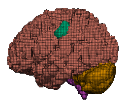
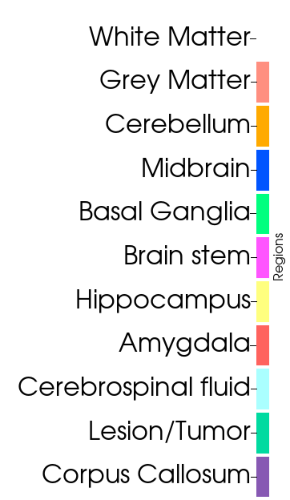

3D brain model creator



Technology used
- Python
- FreeSurfer (brain segmenting tool)
This project was a large component of my postdoctoral research position. Using MRi data and segmenting it using the open source software FreeSurfer one can create a three dimensional computation model to be used in a finite element analysis. These model are made up of quadrahedral elements (voxels) that have been smoothed. Layers of CSF can also be added to the model. The model is segmented into 9 regions (and possibly the inclusion of a lesion or tumor)